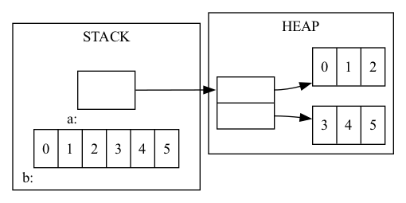

Arrays are stores as contiguous blocks of memory. Compare the distance between the first two addresses in each of the following arrays, to the size of the values in that array.
short shorts[4];
int ints[4];
long longs[4];
printf("shorts: %p vs %p\n", &(shorts[0]), &(shorts[1]));
printf("ints: %p vs %p\n", &(ints[0]), &(ints[1]));
printf("longs: %p vs %p\n", &(longs[0]), &(longs[1]));And really the single dimensional array is tracked using the address of the first value inside of it:
int ints[4] = {7,8,9,10};
printf("%p == %p\n", ints, &(ints[0]));
printf("%d == %d\n", *ints, ints[0]);*) when an array is used as a pointer in this way, it is said to decay: because the compiler looses it's ability to track the size and dimensionality of that array.
So the indexing notation ints[x] is really just performing arithmetic:
int ints[6] = {4,5,6,7,8,9};
printf("%d == %d\n", ints[2], *(ints + ???));Note that a scale factor is being applied for you. In this case an int is 4 bytes.
short shorts[] = {1,2,3};
int ints[] = {4,5,6,7};
long longs[] = {8,9,10,11,12};
// try printing out the values 2, 7, and 10 from the above arrays,
// WITHOUT using any [] square brackets.So arrays and other pointers allow us to pass data by reference to other functions:
void func(int a, int* b, int c[], int *d) {
a = 11;
*b = 22;
c[2] = 33;
*d = 44;
}
int main(int argc, char** argv) {
int a = 1, b = 2;
int c[] = {3,4,5};
int* d = c+1;
func(a,&b,c,d);
printf("%d %d %d %d %d\n",a,b,c[0],c[1],c[2]);
return 0;
} 
int a; // initialize a as array that makes use of heap memory
int b; // initialize b as array that makes use of stack memory
// and dont't forget to free a when you are done* Yes, it is possible to organize heap or stack memory to look like the other picture.
Based on your understanding of the organization of stack-based multidimensional arrays in memory. What do you anticipate the following lines of code to print out? and why?
int c[5][6];
printf("%lu\n", sizeof(c));
printf("%lu\n", sizeof(c[1]));
printf("%lu\n", sizeof(c[1][2]));
printf("%p\n", c); // expect ASLR to randomize this
printf("%p\n", &(c[1])); // so these last two addresses
printf("%p\n", &(c[1][2])); // will be relative to cAnd what if we instead use pointer arithmetic here, what outputs do you expect from this?
int c[5][2];
printf("%ld\n", (long)(c+3) - (long)c);
printf("%ld\n", (long)(*(c+3)+1) - (long)c);What is the scale factor used when manipulating these addresses:
| address | scale factor |
|---|---|
| c | |
| *c |
So, when multidimensional arrays are passed to functions as pointers. What sizes are needed for the compiler to correctly index such arrays?
void printArray(int a[2][4], int rows, int cols) {
for(int i=0;i<rows;i++) {
for(int j=0;j<cols;j++)
printf("%d ", a[i][j]);
printf("\n");
}
}
int main(int arc, char** argv) {
int a[2][4] = {{1,2,3,4},{5,6,7,8}};
printArray(a, 2, 4);
}C allows you to create name aliases for types using the typedef keyword.
typedef int boolean;
boolean x = 1;
x--; // probably better to write: x = !x;
if(x) printf("true\n"); else printf("false\n");Arrays in c allow you to organize groups of values of the same type. Structs in c allow you to organize groups of values of different types.
struct person_struct {
char name[80];
int age;
};
struct person_struct x;
strcpy(x.name,"Gary");
x.age = 26;
printf("%s (%d)\n", x.name, x.age);typedef struct {
char name[80];
int age;
} person;
person x;
strcpy(x.name,"Gary");
x.age = 26;
printf("%s (%d)\n", x.name, x.age);typedef struct {
char name[80];
int age;
} person;
person* x = malloc(sizeof(person));
strcpy((*x).name,"Gary"); // parens required...
(*x).age = 26;
printf("%s (%d)\n", (*x).name, (*x).age);
// or use shorthand -> operator to save two characters per reference
printf("%s (%d)\n", x->name, x->age);typedef struct {
char name[80];
int age;
} person;
person* x = malloc(sizeof(person));
strcpy(x->name,"Gary"); // parens required...
x->age = 26;
printf("%ld\n", (long)&(x->name) - (long)x);
printf("%ld\n", (long)&(x->age) - (long)x);How does this change when the struct fields are defined in a different order?
typedef struct {
char c;
short s;
int i;
} increasing;
typedef struct {
short s;
int i;
char c;
} scrambled;
printf("increasing: %lu\n", sizeof(increasing));
printf("scrambled: %lu\n", sizeof(scrambled));Internal requirement
Each member must be aligned to an offset from the start of the struct that is a multiple of that member's natural alignment requirement (size in the case of primitives).
External requirement
The entire struct must have a size that is a multiple of that struct's largest member's natural alignment requirement.
Map of memory for scrambled struct above's contents
| offset in bytes | use |
|---|---|
| 0 | |
| 1 | |
| 2 | |
| 3 | |
| 4 | |
| 5 | |
| 6 | |
| 7 | |
| 8 | |
| 9 | |
| 10 | |
| 11 |
Unions allow you to define types that can have one of many value types, which can change over time.
int i = 305419896;
void* x = &i;
printf("as int: %d, as char: %d\n", *(int*)x, *(char*)x);
typedef union {
int i;
char c;
} intOrChar;
intOrChar y;
y.i = 305419896;
printf("as int: %d, as char: %d\n", y.i, y.c);void* is a pointer type that can point to anything and must be cast before dereference
unions give us a more controlled way to use multiple types (and dereference)
GDB is a debugging tool that can be run through the command line Common use-case for early CS354: determine where segfault is coming from
gcc -Wall -std=gnu99 -g code.c
gdb a.out| command | shortcut | function |
|---|---|---|
| list | l | list the source code near execution |
| break | b | set breakpoint at line or function |
| run | r | starts running program |
| next | n | executes next line |
| step | s | executes, stepping into function calls |
| p | print the value of an expression | |
| continue | c | continue running code to next breakpoint |
| quit | q | quit |
| layout src | to view both source and gdb interface | |
| tui disable | to return to default gdb view |
Valgrind is another tool that can help check for additional types of memory errors
gcc -Wall -std=gnu99 -g code.c
valgrind --leak-check=full a.outvoid* malloc(sizet size) // allocate size bytes without initialization void* calloc(sizet num, sizet size) // allocates num*size bytes initialized to zero void* realloc(void* ptr, sizet size) // updates size of existing allocation void free(void* ptr) // frees previously allocated memory for other uses
void* ptr = malloc(sizeof(int)*99999999999999);
if(ptr == NULL)
printf("malloc error: %s\n", strerror(errno));
else
free(ptr);Three standard file descriptors: stdin (0), stdout (1), stderr (2). We can read from and write out to these (and others) using fgets and fprintf.
fprintf(stdout, "stdout prompt (%d): ", fileno(stdout));
char buffer[80];
fgets(buffer, 80, stdin);
fprintf(stderr, "error(%d): user entered %s", fileno(stderr), buffer);However we can also read from and write to other file descriptors. * in linux every thing is a file
FILE* fout = fopen("tmp.txt","w");
if(fout == NULL) {
printf("problem opening file for writing: %s\n", strerror(errno));
return 1;
}
fprintf(fout,"This is some output.\n");
fclose(fout);
FILE* fin = fopen("tmp.txt","r");
if(fin == NULL) {
printf("problem opening file for reading: %s\n", strerror(errno));
return 1;
}
char buffer[80];
fgets(buffer,80,fin);
fclose(fin);
printf("read in: %s\n", buffer);Here are some more commonly useful string functions in c.
char* hello = "Hello";
char buffer[80] = "hello";
int length = strlen(buffer);
printf("length1: %d\n",length);
buffer[0] = 'H';
int cmp = buffer == hello;
printf("cmp1: %d\n",cmp);
cmp = strcmp(buffer,hello);
printf("cmp2: %d\n",cmp);
strcpy(buffer,"hello ");
strcat(buffer,"goodbye");
length = strlen(buffer);
printf("length2: %d\n",length);